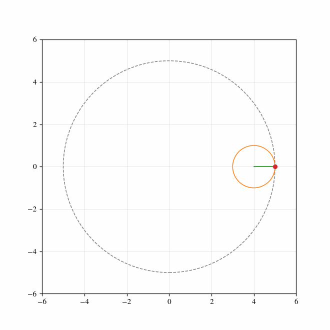

PME3100 · Tarefa 5
Hipocicloide
Um disco de raio r rola sem escorregar pela face interna de um aro de raio R > r. Um ponto P da borda do disco traça a hipocicloide:
x = (R − r) cos θ + r cos((R − r) θ / r)
y = (R − r) sin θ − r sin((R − r) θ / r)

O que o programa faz
- Anima a geração da hipocicloide e mostra instantâneos do processo.
- Traça a curva para quatro razões R/r diferentes.
- Calcula o raio de curvatura e desenha os versores tangente e normal em vários pontos.
- Com θ(t) = ωt, ω = π/60 rad/s, dá a velocidade e a aceleração de P em coordenadas cartesianas e intrínsecas.
- Constrói a curva espacial x = λ, y = λ², z = λ³ e o seu triedro de Frenet.